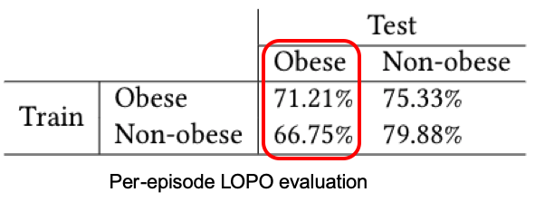

NeckSense: A Multi-Sensor Necklace for Detecting Eating Activities in Free-Living Conditions.
NeckSense: A Multi-Sensor Necklace for Detecting Eating Activities in Free-Living Conditions.
Shibo Zhang,
Yuqi Zhao,
Dzung Nguyen,
Runsheng Xu,
Sougata Sen,
Josiah Hester,
Nabil Alshurafa
Northwestern University, Chicago, USA
[Paper Download]
NeckSense is a novel neck-worn device with multiple embedded sensors
… inferring eating behavior from contactless sensors
… targeting the obesity problem and tested with people with obesity
… validated in real-world setting using wearable camera for 270 hrs in-the-wild
… with data and code provided to the community
We present the design, implementation, and evaluation of a multi-sensor, low-power necklace, NeckSense, for automatically and unobtrusively capturing fine-grained information about an individual’s eating activity and eating episodes, across an entire waking day in a naturalistic setting.
Device and Implementation
We use multiple sensors to capture eating:
1. Proximity sensor: allows us to detect nearby objects without any physical contact. Because the sensor is oriented towards the chin, changes in the return signal represent the distance from the sensor to the chin, from which we can capture the periodicity of chewing behavior.
2. Ambient light sensor: acts as a proxy to feeding gestures, where the ambient light drops when the users hand approach the mouth.
3. IMU sensor: calculates a lean forward angle that allows us to know if a person is leaning forward to take a bite.
Collectively, these sensors are used to detect an eating episode.
Sensor Signals and Modeling
The NeckSense would capture four signals:
1. Chewing periodicity signal from proximity sensor
2. Energy-based signal from IMU
3. Lean forward angle signal from IMU
4. Feeding gesture signal from ambient light sensor
We use a prominent peak finding algorithm to obtain chewing segments, and use the sensor data to extract features for each segment. Then we use an XGBoost classifier to confirm whether the candidate segment is indeed a chewing sequence, and combine them into eating episode prediction.
Experiments and Results
We validated in a free-living study in people with and without obesity using a wearable camera.
We performed the following EXPLORATORY study:
We performed the following FREE-LIVING study:
The following figures indicate proximity signals at different locations during chewing. In the signal plots, the red dot is actual chewing moment and the green dot is predicted chewing moment.
Result:

1. We achieved 82% Average F-score in the exploratory study and 77% Average F-score in the free-living study.
2. When trained on people with obesity,
the model shows better test performance on people with obesity than a model trained on people without obesity.
Let’s make sure we validate our wearables on the people we are designing it for!
Publication
Shibo Zhang, Yuqi Zhao, Dzung Nguyen, Runsheng Xu, Sougata Sen, Josiah Hester, Nabil Alshurafa. 2020.
NeckSense: A Multi-Sensor Necklace for Detecting Eating Activities in Free-Living Conditions.
Proceedings of the ACM on Interactive, Mobile, Wearable and Ubiquitous Technologies. June 2020. Article No.: 72.
https://doi.org/10.1145/3397313
@@article{necksense,
author = {Zhang, Shibo and Zhao, Yuqi and Nguyen, Dzung Tri and Xu, Runsheng and Sen, Sougata and Hester, Josiah and Alshurafa, Nabil},
title = {NeckSense: A Multi-Sensor Necklace for Detecting Eating Activities in Free-Living Conditions},
year = {2020},
issue_date = {June 2020},
publisher = {Association for Computing Machinery},
address = {New York, NY, USA},
volume = {4},
number = {2},
url = {https://doi.org/10.1145/3397313},
doi = {10.1145/3397313},
journal = {Proc. ACM Interact. Mob. Wearable Ubiquitous Technol.},
month = jun,
articleno = {72},
numpages = {26},
keywords = {neck-worn sensor, free-living studies, eating activity detection, human activity recognition, sensor fusion, automated dietary monitoring, wearable}
}
Webpage adapted from Yen-Chia Hsu